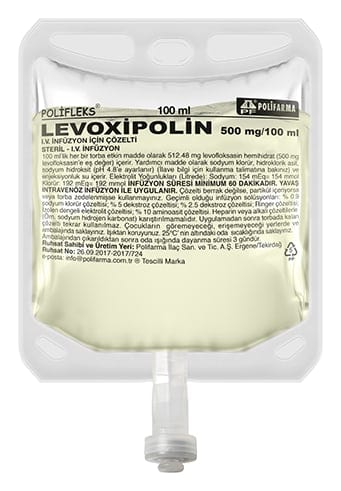

Levoxipolin 500 mg/100 ml IV İnfüzyon İçin Çözelti, 100 ml

Ne için kullanılır
KT · Bölüm 1LEVOXİPOLİN, damar içine uygulanan, yeşilimsi sarı renkte bir çözeltidir. LEVOXİPOLİN, her 1 mL’sinde 5 mg levofloksasin içeren, toplam 100 mL çözelti içeren PP ( polipropilen) torbalarda sunulmaktadır. LEVOXİPOLİN bakterilere karşı etkili bir antibiyotiktir. Florokinolonlar adı verilen antibiyotik grubuna dahildir. Bakterilerin büyümesini, çoğalmasını engeller ve bakterilerin yok olmasını sağlar. LEVOXİPOLİN etkin maddesi olan levofloksasine karşı duyarlı olan bakterilerin neden olduğu enfeksiyonların tedavisinde kullanılır. Doktorunuz antibiyotik tedavisini ağızdan alamayacak durumda olduğunuz için damar içine uygulanacak bu LEVOXİPOLİN formunu, sizde aşağıdaki durumlardan biri bulunduğu için reçete etmiş olabilir: • İdrar yolları ve böbrekte gelişen iltihap (piyelonefrit) ve komplikasyonlu böbrek ve idrar yolu enfeksiyonları • Prostat iltihabı • Havaya karışmış şarbon mikrobuna maruz kalma LEVOXİPOLİN aşağıdaki enfeksiyonların tedavisinde yalnızca, bu enfeksiyonların tedavisi için genel olarak önerilen diğer antibakteriyel ilaçların kullanımının uygun görülmediği durumlarda kullanılmalıdır: • Zatürre enfeksiyonu (pnömoni) • Komplikasyonlu deri ve yumuşak doku enfeksiyonları